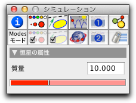

恒星

| 力 = 恒星の質量 * 惑星の質量 / 距離² |
恒星による力のもとで、初速度を持つ自由質点は、楕円、放物線、双曲線のいずれかの軌道上を動きます。 CindyLab では、そのような状況を、恒星と速度を持つ質点を置いてアニメーションを始めるという、わずかなマウスクリックだけでシミュレーションできます。次の図は、そのような状況を示します。
 |
| 恒星の周りを回る惑星 |
２つの恒星をおくと、状況はさらに面白くなります。次の図は、２つの恒星の複合した力の場での惑星の軌跡を示します。
 |
| １つの惑星と２つの恒星 |
つぎの２つの画像は、１つまたは２つの恒星による力の場のイメージです。この図は、CindyScriptの"drawforces"命令によって生成されました。
 |  |
|
| １つの恒星による力の場 | ２つの恒星による力の場 |
恒星インスペクタ
恒星は、インスペクタに変更できる１個のアイテム:初期質量:を持ちます。初期値は10で、それは質点の初期値の10倍です。
CindyLab で、重力には、比較的小さな尺度が内蔵されています。重力定数の実際の値は、画面に描かれた重力矢線の長さによって計算されます。
 |
| 恒星のインスペクタ |
恒星と CindyScript
CindyLab のいくつかの要素と同様、恒星は CindyScript で読み書きできるいくつかの要素を提供します。次のリストは、重力に関してアクセス可能なものを示します。
- strength: 大きさの要因 (実数、読み書き可)
- potential: 恒星の重力場における惑星の位置エネルギー(実数、読み出しのみ、追加可能な定数として定義される)
- pe: 恒星の重力場における惑星の位置エネルギー(実数、読み出しのみ、追加可能な定数として定義される)
- simulate: 重力場シミュレーションのON/OFF(ブール値, 読み書き)
次もご覧ください
Page last modified on Tuesday 13 of March, 2012 [13:36:41 UTC].
The original document is available at
http://doc.cinderella.de/tiki-index.php?page=SunJ